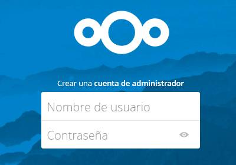
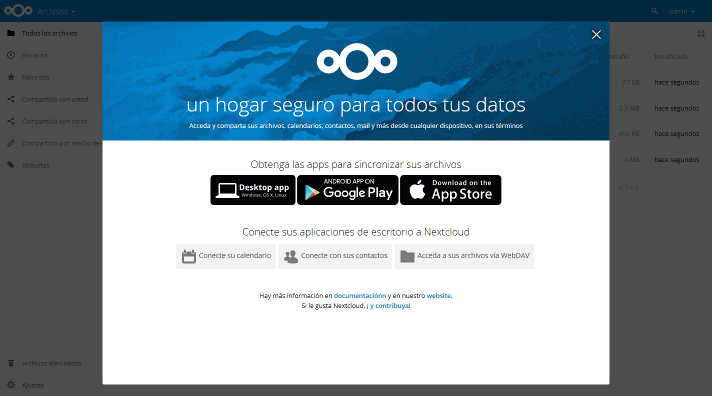
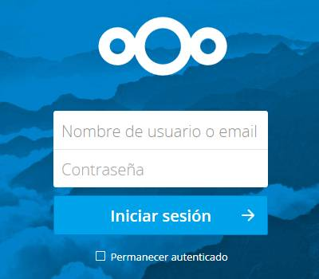
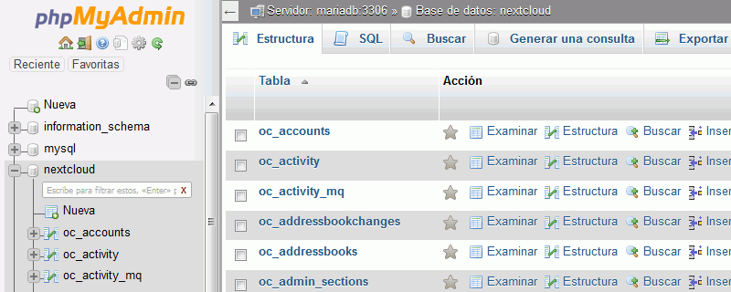
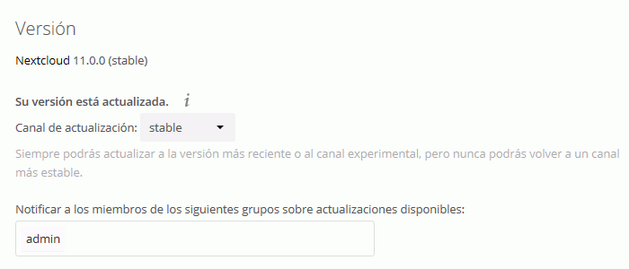
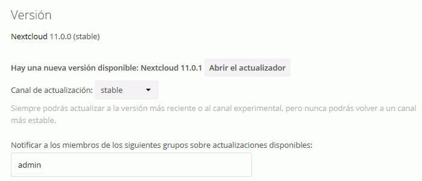
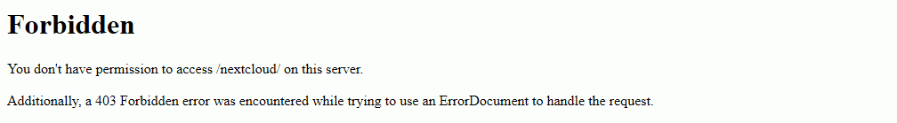

En esta lección se proponen ejercicios para conocer y utilizar Nextcloud. Se pueden consultar las soluciones de estos ejercicios de Nextcloud, aunque se recomienda intentar realizarlos primero sin recurrir a estas soluciones. A continuación se pueden realizar los ejercicios (2) de Nextcloud, en los que se amplian las funcionalidades de Nextcloud.
Actualmente (enero de 2017), Nextcloud no está disponible en Windows ni está disponible como instalador de Bitnami, por lo que lo instalaremos como contenedor Docker.
Actualmente (enero de 2017), no hay una imagen oficial Docker de Nextcloud, aunque varias personas se han ofrecido para proporcionarla:
La primera de ellas parece que ha sido elegida para crear una imagen semi-oficial: https://github.com/nextcloud/docker, pero en estos ejercicios se utiliza la segunda, que parece tener una configuración más sencilla.
En este ejercicio se trata de crear el contenedor Docker de Nextcloud en una máquina virtual.
Prepare una máquina virtual de Ubuntu 16.04 LTS Server con 16 GB de disco virtual e instale Docker.
Nextcloud puede utilizar su propia base de datos SQLite o utilizar una base de datos MariaDB/MySQL o PostgreSQL. Para instalaciones pequeñas como la de estos ejercicios, SQLite es una opción suficiente, pero en servidores reales se recomienda utilizar un sistema gestor de bases de datos independiente. Para practicar el uso de Docker, puede utilizar MariaDB. Para ello:
Cree una red.
Cree un contenedor de MariaDB.
Cree un contenedor de phpMyAdmin que escuche en un puerto distino del puerto 80.
Cree en MariaDB con phpMyAdmin un usuario nextcloud, que pueda acceder desde cualquier ordenador, con contraseña nextcloud y base de datos única.
Consultar cuál es la dirección IP privada 172.BBB.CCC.DDD del contenedor de MariaDB.
Visite la página web de la imagen Docker de Nextcloud de Grey Christoforo.
Cree el contenedor de Nextcloud siguiendo las instrucciones de esa página. En caso de ir a utilizar MariaDB como base de datos, incluya el contenedor en la red en la que esté MariaDB.
Compruebe en el navegador del ordenador anfitrión que puede ver la página de entrada en NextCloud, escribiendo la dirección https://AAA.BBB.CCC.DDD/nextcloud en la que AAA.BBB.CCC.DDD es la dirección IP de la máquina virtual.

Nota: Si se muestra un aviso de seguridad por no disponer el servidor de un certificado de seguridad válido, será necesario indicar al navegador que se confíe en la identificación del sitio.
NextCloud (1) 2 - Completar instalación
En este ejercicio se trata de completar la instalación de Nextcloud.
Complete la instalación de NextCloud:
Nombre de usuario: admin
Contraseña: admin
Almacenamiento: directorio predeterminado
Base de datos: SQLite / MariaDB
Notas: La contraseña sugerida se considera muy débil y no debería utilizarse en un entorno real.
Se mostrará el interfaz de Nextcloud con un aviso de bienvenida

Salga de Nextcloud y compruebe que puede volver a entrar como administrador.

Si ha instalado Nextcloud de manera que utilice MariaDB como base de datos, compruebe con phpMyAdmin que se han creado las tablas correspondientes. Si no se hubiera creado ninguna tabla es que Nextcloud está utilizando SQLite.

nextcloud (1) 3 - Actualizar Nextcloud
En este ejercicio se trata de actualizar Nextcloud, en caso de que haya una actualización disponible:
Yo no he podido realizar la actualización porque me sale un mensaje de error que no he sabido resolver.
Como administrador, compruebe en Nextcloud si hay una actualización disponible (puede tardar un rato en mostrar la disponibilidad d euna nueva versión.


Consulte las instrucciones en el repositorio de Grey Christoforo, para saber el script que se debe ejecutar antes y después de realizar la actualización
Intente entrar en Nextcloud como administrador mediante una conexión no cifrada http://192.168.XXX.YYY/... y compruebe que se muestra el aviso siguiente:

Configure el servidor Apache del contenedor para forzar el acceso mediante https.
Para ello, modifique el archivo de configuración de Apache nextcloud.conf y reinicie el contenedor
Antes de modificar un archivo de configuración se recomienda siempre hacer una copia del archivo original.
Añada una directiva VirtualHost que redirija las peticiones http a https.
Nota: Creo que el valor de Servername no es importante, pero debe haber Servername.
Compruebe que al escribir http://192.168.XXX.YYY/... se redirige automáticamente a https://192.168.XXX.YYY/...
Nextcloud (1) 5 - Crear un alias
Incluya en el archivo de configuración de Apache nextcloud.conf un alias, de manera que pueda escribir https:/192.168.XXX.YYY/nc/ en vez de https:/192.168.XXX.YYY/nextcloud/.
Nextcloud (1) 6 - Cambio de IP
Si cambiara la IP de la máquina virtual, Nextcloud dejaría de funcionar correctamente porque en el archivo de configuración se guarda la URL de Nextcloud. En clase esto ocurre de vez en cuando, ya que el router de aula está continuamente asignando direcciones. En casa puede ocurrir más raramente.
Apague y reinicie la máquina virtual.
Si cambia la IP de la máquina virtual, compruebe que Nextcloud no funciona correctamente
Si no cambia la IP de la máquina virtual, haga el ejercicio sin cambiar la IP, pero así sabrá cómo hacerlo si algún día cambia la IP.
Corrija el archivo de configuración de Nextcloud config.php con la nueva IP.
Compruebe que puede entrar en Nextcloud correctamente.
Nextcloud (1) 7 - Acceso mediante SSH o FTP
No he tenido tiempo de preparar este ejercicio.
En este ejercicio se trataría se crear un contenedor que ofreciera el servicio SSH o el servicio FTP.